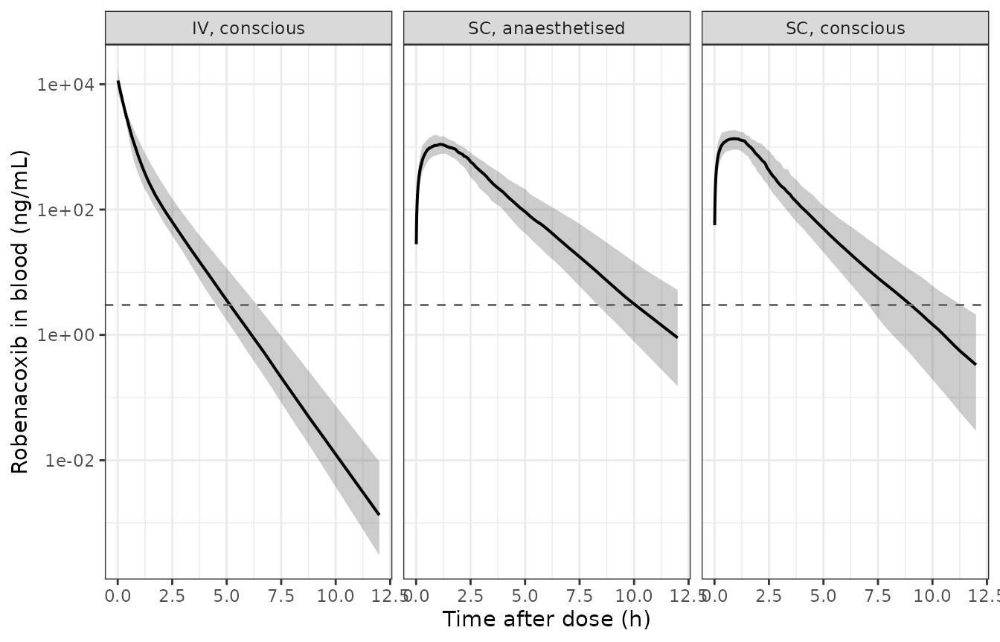

Robenacoxib in cats (Pelligand 2016)
Source:vignettes/articles/Pelligand_2016_robenacoxib_cat.Rmd
Pelligand_2016_robenacoxib_cat.RmdModel and source
mod <- rxode2::rxode2(readModelDb("Pelligand_2016_robenacoxib_cat"))
#> ℹ parameter labels from comments will be replaced by 'label()'- Citation: Pelligand L, Soubret A, King JN, Elliott J, Mochel JP. Modeling of large pharmacokinetic data using nonlinear mixed-effects: a paradigm shift in veterinary pharmacology. A case study with robenacoxib in cats. CPT Pharmacometrics Syst Pharmacol. 2016;5(12):625-635. doi:10.1002/psp4.12141. Structural model transcribed from the MLXTRAN source listing deposited as Supplementary Data (PSP4-5-625-s008.txt); residual-error magnitudes and the anaesthesia effect on V1 digitised from the SAEM convergence traces of Supplementary Figure S4 (PSP4-5-625-s004.pdf).
- Description: Preclinical/clinical veterinary (cat). Two-compartment population PK model for robenacoxib in cats, parameterised per kg body weight, pooling intravenous and subcutaneous dosing from eight studies. Subcutaneous absorption is a parallel mixed-order input: a fraction F0 of the bioavailable dose enters the central compartment by a zero-order process of duration Tk0 = 1.78 h and the remainder arrives first-order through a depot with ka = 0.68 1/h, giving flip-flop kinetics because ka is slower than the disposition terminal rate constant. General anaesthesia doubles the central volume of distribution; no other covariate was retained (Pelligand 2016)
- Article: https://doi.org/10.1002/psp4.12141
- Supplementary MLXTRAN model listing:
PSP4-5-625-s008.txt - Supplementary SAEM convergence traces (Figure S4):
PSP4-5-625-s004.pdf
This is a veterinary population PK model, and the paper is explicitly a methodological demonstration: it is the first population PK analysis at scale in cats, pooling eight studies so that sparsely sampled clinical patients could be analysed alongside densely sampled laboratory animals. Its headline pharmacological result is that subcutaneous robenacoxib exhibits flip-flop kinetics – absorption, not elimination, is rate-limiting – which single-route two-stage analyses of the same drug had missed.
Population
Blood robenacoxib concentrations from 83 cats over 97 administrations (23 intravenous, 74 subcutaneous; 14 cats received both routes at least a week apart) pooled from eight studies (Table 1). Two cohorts:
-
47 conscious laboratory cats (seven
CRAdrug-development studies), densely sampled with 9-12 samples per administration. 22 female / 27 male, median body weight 3.9 kg (IQR 3.45-4.14, range 2.5-5.7), median age 1.32 years (IQR 1.0-1.55, range 0.97-6.1). - 36 clinical female cats admitted for elective ovariohysterectomy, dosed 2 mg/kg s.c. under general anaesthesia and sparsely sampled (1-2 samples drawn 0.8-8.2 h after dosing, at extubation and 2 h thereafter). Median body weight 2.73 kg (IQR 2.41-2.99, range 1.77-4.0), median age 0.76 years (range 0.34-4.31).
Doses ranged 1.6-2.3 mg/kg. 55 of 652 measured concentrations were below the limit of quantification and were handled by the Monolix equivalent of the NONMEM M3 method (Beal 2001). Robenacoxib was assayed in whole blood, by HPLC-UV over 500-20,000 ng/mL and by LC-MS over 3-100 ng/mL (Methods, “Analytical phase”).
The same information is available programmatically:
str(readModelDb("Pelligand_2016_robenacoxib_cat")()$population)
#> List of 12
#> $ species : chr "cat (domestic shorthair; Felis catus)"
#> $ n_subjects : int 83
#> $ n_studies : int 8
#> $ n_administrations: int 97
#> $ n_observations : int 652
#> $ age_range : chr "0.34-6.1 years"
#> $ weight_range : chr "1.77-5.7 kg"
#> $ sex_female_pct : num 69.9
#> $ disease_state : chr "47 healthy conscious laboratory cats (seven CRA drug-development studies) plus 36 clinical cats admitted for el"| __truncated__
#> $ dose_range : chr "1.6-2.3 mg/kg single dose, intravenous or subcutaneous"
#> $ regions : chr "France, Switzerland, United Kingdom"
#> $ notes : chr "Demographics from Table 1 (per-study listing) and Results 'Study demographics'. Laboratory cats: 22 female / 27"| __truncated__Structural model
The paper’s Figure 1 draws the structure and the supplementary MLXTRAN listing gives it unambiguously:
PK:
k12=Q/V1
k21=Q/V2
k=CL/V1
compartment(cmt=1, amount=Ac)
oral(cmt=1,adm=1,Tk0=Tk0, p=Ftot*F0)
oral(cmt=1,adm=1,ka =ka, p=Ftot*(1-F0))
iv(cmt=1,adm=2)
elimination(cmt=1, k)
peripheral(k12, k21, amount=Ap)
Cc=Ac/V1Two points that the listing settles and the article text alone does not:
-
F0is a parallel split of the dose, not a sequential reparameterisation. The twooral(...)statements are simultaneous inputs on compartment 1 with bioavailabilitiesFtot*F0andFtot*(1-F0). nlmixr2lib also registers a superficially similar canonical,fzo, for the sequential zero-then-first-order idiom in which the reported fraction is of the total absorption time constant. That reading is excluded arithmetically as well as by the listing: it would implyka = fzo / (d1 * (1 - fzo))=0.50 / (1.78 * 0.50)= 0.562 1/h, which is not the publishedkaof 0.68 1/h. -
V2is the peripheral volume. Methods “Data analysis and model evaluation” calls it “volume of the central compartment (V2)”, but Table 2 labels it “Peripheral compartment volume of distribution” and the listing places it in theperipheral(...)block.
Because rxode2 applies one bioavailability per compartment
rather than per administration type, the three inputs of the
listing are encoded with the canonical ROUTE_IV indicator
selecting which bioavailability applies to a dose placed in
central:
A subcutaneous administration is therefore entered
as two dose records at the same time – a bolus into
depot and a rate = -2 record into
central so the modelled dur(central) is
applied – both carrying ROUTE_IV = 0. An
intravenous administration is a single plain bolus into
central with ROUTE_IV = 1; because that record
carries no rate, rxode2 ignores dur(central) and keeps it a
bolus.
Source trace
| Equation / parameter | Value | Source location |
|---|---|---|
| Two-compartment disposition, first-order elimination |
k = CL/V1, k12 = Q/V1,
k21 = Q/V2
|
Figure 1; supplement PSP4-5-625-s008.txt
PK: block |
| Parallel zero- + first-order s.c. input |
p = Ftot*F0 and p = Ftot*(1-F0)
|
supplement PSP4-5-625-s008.txt
|
Cc = Ac/V1 |
n/a | supplement PSP4-5-625-s008.txt
Cc=Ac/V1
|
lcl (CL) |
0.502 L/h/kg | Results “PKs” (Table 2 prints 0.50); fixed from the IV-only fit |
lvc (V1, conscious) |
0.166 L/kg | Table 2 prints 0.16; unrounded value pinned by Results “PKs” Vss =
0.213 L/kg minus V2, and by the beta_ANEST,V1 trace of
Figure S4 |
lvp (V2) |
0.047 L/kg | Table 2, “Peripheral compartment volume of distribution” |
lq (Q) |
0.065 L/h/kg | Table 2, “Inter-compartmental clearance” |
lka (ka) |
0.68 1/h | Table 2, “Absorption rate” (RSE 5%) |
ld1 (Tk0) |
1.78 h | Table 2, “Absorption duration (0-order)” (RSE 5%) |
logitfdepot (Ftot) |
0.78 | Table 2, “Bioavailability” (RSE 3%); logit transform per Methods “PK model development” |
logitffo (1 - F0) |
0.50 | Table 2, “Fraction absorbed through 0-order” F0 = 0.50 (RSE 10%) |
e_anesth_ga_vc |
log(0.33/0.166) = 0.687 | Table 2 V1 rows at ANEST = 0 / 1; Figure S4
beta_ANEST,V1 trace reads 0.684 |
etalcl, etalvc, etalvp,
etalq
|
0.16, 0.41, 0.01, 0.08 | Table 2 “IIV (%)” column; each confirmed against its Figure S4 omega trace |
etalogitfdepot, etalogitffo,
etalka, etald1
|
0.57, 0.93, 0.21, 0.35 | Table 2 “IIV (%)” column; each confirmed against its Figure S4 omega trace |
corr(etalka, etald1) |
-0.24 | Results “PKs” |
addSd (a) |
2.79 ng/mL | Figure S4 panel a final-estimate marker (not printed in
the article) |
propSd (b) |
0.21 | Figure S4 panel b final-estimate marker (not printed in
the article) |
The “IIV (%)” column is omega, not a back-transformed CV
Table 2’s IIV (%) column could be read either as the SD
of the random effect on the transformed (log, or logit for
Ftot and F0) scale, or as a back-transformed
coefficient of variation – readings that differ by a factor of 1.2 at
93%. The supplement settles it: Figure S4 plots the SAEM trace of every
omega, and each converges to exactly the tabulated percentage divided by
100.
omega_check <- data.frame(
parameter = c("Ftot", "ka", "Tk0", "CL", "V1", "Q", "V2", "F0"),
table2_iiv_pct = c(57, 21, 35, 16, 41, 8, 1, 93),
figS4_trace = c(0.571, 0.207, 0.355, 0.162, 0.415, 0.081, 0.0125, 0.930)
)
omega_check$abs_diff <- abs(omega_check$table2_iiv_pct / 100 - omega_check$figS4_trace)
knitr::kable(omega_check |>
dplyr::rename(
"Parameter" = parameter,
"Table 2 IIV (%)" = table2_iiv_pct,
"Figure S4 omega trace" = figS4_trace,
"|difference|" = abs_diff
), digits = 4)| Parameter | Table 2 IIV (%) | Figure S4 omega trace | |difference| |
|---|---|---|---|
| Ftot | 57 | 0.5710 | 0.0010 |
| ka | 21 | 0.2070 | 0.0030 |
| Tk0 | 35 | 0.3550 | 0.0050 |
| CL | 16 | 0.1620 | 0.0020 |
| V1 | 41 | 0.4150 | 0.0050 |
| Q | 8 | 0.0810 | 0.0010 |
| V2 | 1 | 0.0125 | 0.0025 |
| F0 | 93 | 0.9300 | 0.0000 |
# Every omega trace reproduces its tabulated percentage to better than 0.01.
# If the column were a back-transformed CV, omega(F0) would be
# sqrt(log(1 + 0.93^2)) = 0.79, which is 0.14 away from the 0.93 trace.
stopifnot(
max(omega_check$abs_diff) < 0.01,
abs(sqrt(log(1 + 0.93^2)) - 0.93) > 0.10
)The same figure carries the traces for the two residual-error
magnitudes a and b, which the article never
prints. They were digitised from the final-estimate markers, and the
eight tabulated parameters above – read off the same page by
the same procedure – are what validates that digitisation.
Typical-value verification
With the random effects zeroed, three closed-form identities must hold exactly. These compare a solve against its own analytic solution, so the difference is pure numerical error and the tolerances are tight by design.
dose_mgkg <- 2 # Table 1: the 2 mg/kg regimen used in six of the eight studies
tgrid <- sort(unique(c(
seq(0, 0.5, by = 0.01),
seq(0.5, 4, by = 0.05),
seq(4, 12, by = 0.25)
)))
# Build event tables as plain data frames. Covariate columns assigned to an
# rxEt object are silently dropped, so they are materialised here.
make_events <- function(id, route_iv, anesth_ga) {
if (route_iv == 1) {
# IV: one plain bolus into central. No rate, so dur(central) is ignored.
dosing <- data.frame(
id = id, time = 0, evid = 1L, cmt = "central",
amt = dose_mgkg, rate = 0
)
} else {
# SC: two records at t = 0. The central record carries rate = -2 so that
# rxode2 applies the modelled zero-order duration dur(central) = Tk0.
dosing <- data.frame(
id = id, time = 0, evid = 1L, cmt = c("depot", "central"),
amt = dose_mgkg, rate = c(0, -2)
)
}
obs <- data.frame(
id = id, time = tgrid, evid = 0L, cmt = "central",
amt = NA_real_, rate = NA_real_
)
out <- rbind(dosing, obs)
out$ROUTE_IV <- route_iv
out$ANESTH_GA <- anesth_ga
out[order(out$time, -out$evid), ]
}
arms <- data.frame(
id = 1:3,
arm = c("IV, conscious", "SC, conscious", "SC, anaesthetised"),
ROUTE_IV = c(1, 0, 0),
ANESTH_GA = c(0, 0, 1)
)
ev_typ <- do.call(rbind, Map(make_events, arms$id, arms$ROUTE_IV, arms$ANESTH_GA))
mod_typ <- rxode2::zeroRe(mod)
sim_typ <- rxode2::rxSolve(mod_typ, ev_typ, returnType = "data.frame")
#> ℹ omega/sigma items treated as zero: 'etalcl', 'etalvc', 'etalvp', 'etalq', 'etalogitfdepot', 'etalogitffo', 'etalka', 'etald1'
#> Warning: multi-subject simulation without without 'omega'
stopifnot(all(sim_typ$Cc >= 0)) # no solver noise into negative concentrations
CL <- 0.502
V1 <- 0.166
V2 <- 0.047
Q <- 0.065
FTOT <- 0.78
KA <- 0.68
trap <- function(t, y) sum(diff(t) * (head(y, -1) + tail(y, -1)) / 2)
typ <- sim_typ |>
dplyr::filter(!is.na(Cc)) |>
dplyr::group_by(id) |>
dplyr::summarise(
c0 = Cc[time == 0],
cmax = max(Cc),
tmax = time[which.max(Cc)],
auc = trap(time, Cc),
.groups = "drop"
) |>
dplyr::left_join(arms, by = "id")
# Closed forms. Amounts are mg/kg and volumes L/kg, so central/vc is mg/L and
# the model's x1000 reports ng/mL; the analytic targets carry the same factor.
target_auc_iv <- dose_mgkg / CL * 1000
target_auc_sc <- FTOT * dose_mgkg / CL * 1000
target_c0_iv <- dose_mgkg / V1 * 1000
knitr::kable(
data.frame(
Identity = c(
"IV C0 = Dose/V1 (ng/mL)",
"IV AUC0-12h ~ Dose/CL (ng*h/mL)",
"SC AUC0-12h ~ Ftot*Dose/CL (ng*h/mL)",
"SC anaesthetised AUC = SC conscious AUC (ng*h/mL)"
),
Analytic = c(target_c0_iv, target_auc_iv, target_auc_sc, target_auc_sc),
Simulated = c(
typ$c0[typ$arm == "IV, conscious"],
typ$auc[typ$arm == "IV, conscious"],
typ$auc[typ$arm == "SC, conscious"],
typ$auc[typ$arm == "SC, anaesthetised"]
)
) |>
dplyr::mutate("% diff" = 100 * (Simulated - Analytic) / Analytic),
digits = 4
)| Identity | Analytic | Simulated | % diff |
|---|---|---|---|
| IV C0 = Dose/V1 (ng/mL) | 12048.193 | 12048.193 | 0.0000 |
| IV AUC0-12h ~ Dose/CL (ng*h/mL) | 3984.064 | 3985.902 | 0.0461 |
| SC AUC0-12h ~ FtotDose/CL (ngh/mL) | 3107.570 | 3106.858 | -0.0229 |
| SC anaesthetised AUC = SC conscious AUC (ng*h/mL) | 3107.570 | 3106.824 | -0.0240 |
stopifnot(
# Initial concentration after an IV bolus is Dose/V1 to solver precision.
abs(typ$c0[typ$arm == "IV, conscious"] / target_c0_iv - 1) < 1e-6,
# AUC to 12 h (about 12 terminal half-lives) is within trapezoidal error of
# the infinite-time closed form.
abs(typ$auc[typ$arm == "IV, conscious"] / target_auc_iv - 1) < 0.005,
# THE load-bearing gate on the absorption model: total s.c. exposure must be
# exactly Ftot x the IV exposure. It goes red if either f() multiplier is
# wrong, if the zero-order record is dropped, or if the dose is double-counted
# across the two s.c. records.
abs(typ$auc[typ$arm == "SC, conscious"] / target_auc_sc - 1) < 0.005,
# Anaesthesia acts on V1 only, so it must move Cmax without moving AUC.
abs(typ$auc[typ$arm == "SC, anaesthetised"] /
typ$auc[typ$arm == "SC, conscious"] - 1) < 1e-3,
typ$cmax[typ$arm == "SC, anaesthetised"] < typ$cmax[typ$arm == "SC, conscious"]
)Steady-state volume of distribution
Results “PKs” reports a population steady-state volume of 0.213 L/kg.
This is the check that pins the unrounded V1:
Vss = V1 + V2, so Table 2’s displayed 0.16 would give 0.207
L/kg, 2.8% below the published figure, whereas 0.166 gives 0.213
exactly.
vss <- V1 + V2
# Rounded to the 3 significant figures the paper prints.
stopifnot(abs(vss - 0.213) < 0.0005)
# And the displayed 2-significant-figure V1 does NOT reproduce it, which is why
# the model carries 0.166.
stopifnot(abs((0.16 + V2) - 0.213) > 0.004)
c(vss_model = vss, vss_paper = 0.213, vss_from_displayed_v1 = 0.16 + V2)
#> vss_model vss_paper vss_from_displayed_v1
#> 0.213 0.213 0.207Flip-flop kinetics
The paper’s central pharmacological claim. The disposition terminal
rate constant beta is obtained from the two-compartment
micro-constants; the absorption rate constant is slower, so after
subcutaneous dosing the observed terminal slope is governed by
absorption rather than by elimination.
k10 <- CL / V1
k12 <- Q / V1
k21 <- Q / V2
S <- k10 + k12 + k21
P <- k10 * k21
beta_typ <- (S - sqrt(S^2 - 4 * P)) / 2
alpha_typ <- (S + sqrt(S^2 - 4 * P)) / 2
# Terminal slope recovered by regression well after the peak, per arm.
term_slope <- function(this_id, from, to) {
d <- sim_typ |>
dplyr::filter(id == this_id, !is.na(Cc), time >= from, time <= to, Cc > 0)
stopifnot(nrow(d) > 5) # a lookup that matched nothing must not pass silently
-stats::coef(stats::lm(log(Cc) ~ time, data = d))[["time"]]
}
slope_iv <- term_slope(1, 6, 12)
slope_sc <- term_slope(2, 6, 12)
knitr::kable(
data.frame(
Quantity = c(
"alpha (1/h)", "beta (1/h)", "ka (1/h)",
"IV terminal slope 6-12 h (1/h)", "SC terminal slope 6-12 h (1/h)",
"ln2/beta (h)", "ln2/ka (h)"
),
Value = c(alpha_typ, beta_typ, KA, slope_iv, slope_sc, log(2) / beta_typ, log(2) / KA)
),
digits = 4
)| Quantity | Value |
|---|---|
| alpha (1/h) | 3.6541 |
| beta (1/h) | 1.1445 |
| ka (1/h) | 0.6800 |
| IV terminal slope 6-12 h (1/h) | 1.1445 |
| SC terminal slope 6-12 h (1/h) | 0.6843 |
| ln2/beta (h) | 0.6056 |
| ln2/ka (h) | 1.0193 |
stopifnot(
# Flip-flop: absorption is slower than disposition.
KA < beta_typ,
# After IV the terminal slope is beta; after SC it is ka. Both are
# deterministic (typical-value) solves, so these are tight.
abs(slope_iv / beta_typ - 1) < 0.05,
abs(slope_sc / KA - 1) < 0.01
)Discussion reports “absorption and elimination half-lives of 0.64
hours and 1.04 hours”. Those are ln2/beta = 0.606 h and
ln2/ka = 1.019 h – i.e. the apparent half-lives
under flip-flop, where the fast phase seen after s.c. dosing reflects
disposition and the terminal phase reflects absorption. The paper quotes
the first against its median beta of 1.08 1/h
(ln2/1.08 = 0.642 h) rather than the typical-value
beta used here.
The absorption dose split and the zero-order duration
Total subcutaneous exposure is invariant to how the dose is divided
between the two parallel inputs, so the AUC = Ftot*Dose/CL
gate above cannot see F0 or Tk0 at all. They
are pinned here by solving each input path on its own.
# Same event construction, but optionally keeping only one of the two s.c.
# records so each input path can be weighed separately.
make_events_path <- function(id, path) {
dosing <- data.frame(
id = id, time = 0, evid = 1L, cmt = c("depot", "central"),
amt = dose_mgkg, rate = c(0, -2)
)
dosing <- switch(path,
first_order = dosing[1, , drop = FALSE],
zero_order = dosing[2, , drop = FALSE],
both = dosing
)
# 0.01 h grid so that a Tmax sitting exactly at Tk0 is resolved.
obs <- data.frame(
id = id, time = seq(0, 12, by = 0.01), evid = 0L, cmt = "central",
amt = NA_real_, rate = NA_real_
)
out <- rbind(dosing, obs)
out$ROUTE_IV <- 0
out$ANESTH_GA <- 0
out[order(out$time, -out$evid), ]
}
paths <- c("first_order", "zero_order", "both")
ev_path <- do.call(rbind, Map(make_events_path, seq_along(paths), paths))
sim_path <- rxode2::rxSolve(mod_typ, ev_path, returnType = "data.frame")
#> ℹ omega/sigma items treated as zero: 'etalcl', 'etalvc', 'etalvp', 'etalq', 'etalogitfdepot', 'etalogitffo', 'etalka', 'etald1'
#> Warning: multi-subject simulation without without 'omega'
path_sum <- sim_path |>
dplyr::filter(!is.na(Cc)) |>
dplyr::group_by(id) |>
dplyr::summarise(
auc = trap(time, Cc), cmax = max(Cc), tmax = time[which.max(Cc)],
.groups = "drop"
) |>
dplyr::mutate(path = paths[id])
# Each path must carry Ftot x its own fraction of the dose. F0 = 0.50, so the
# two are equal here and each is half the total.
target_path_auc <- FTOT * 0.50 * dose_mgkg / CL * 1000
knitr::kable(
path_sum |>
dplyr::select(path, auc, cmax, tmax) |>
dplyr::rename(
"Input path" = path, "AUC0-12h (ng*h/mL)" = auc,
"Cmax (ng/mL)" = cmax, "Tmax (h)" = tmax
),
digits = 3,
caption = "Each subcutaneous input path solved on its own (typical values)."
)| Input path | AUC0-12h (ng*h/mL) | Cmax (ng/mL) | Tmax (h) |
|---|---|---|---|
| first_order | 1553.075 | 644.236 | 0.63 |
| zero_order | 1553.784 | 843.362 | 1.78 |
| both | 3106.859 | 1382.601 | 0.87 |
auc_of <- function(p) {
v <- path_sum$auc[path_sum$path == p]
stopifnot(length(v) == 1L) # fail loudly rather than pass on zero rows
v
}
tmax_of <- function(p) {
v <- path_sum$tmax[path_sum$path == p]
stopifnot(length(v) == 1L)
v
}
stopifnot(
# F0 = 0.50: each path delivers Ftot x 0.50 x Dose. Mis-encoding the split
# (or inverting which of ffo / 1 - ffo feeds which compartment when the two
# differ) moves these apart while leaving the total untouched.
abs(auc_of("first_order") / target_path_auc - 1) < 0.005,
abs(auc_of("zero_order") / target_path_auc - 1) < 0.005,
# The two paths are additive: the system is linear, so they must sum to the
# combined solve.
abs((auc_of("first_order") + auc_of("zero_order")) / auc_of("both") - 1) < 1e-3,
# Tk0 = 1.78 h. For a constant-rate input straight into central with no other
# input, the peak falls exactly at the end of the infusion, so the
# zero-order-only Tmax reads Tk0 back off the solve to grid resolution.
abs(tmax_of("zero_order") - 1.78) <= 0.011,
# The first-order path peaks earlier, driven by ka rather than by Tk0.
tmax_of("first_order") < tmax_of("zero_order")
)Virtual cohort
The published parameters are all expressed per kg body weight and no weight effect was retained, so a 2 mg/kg dose gives a body-weight-independent concentration-time profile and the cohort needs no weight distribution for the PK simulation. Body weights are drawn only to reproduce the paper’s derived extraction ratio below.
Three arms of 100 cats each, matching the design: the laboratory cats contributed both routes while conscious, and the clinical cats contributed subcutaneous dosing under anaesthesia.
rxode2::rxSetSeed(20161022) # the article's online publication date
n_arm <- 100
cohort <- do.call(rbind, lapply(seq_len(nrow(arms)), function(k) {
ids <- (k - 1) * n_arm + seq_len(n_arm)
out <- do.call(rbind, lapply(ids, function(i) {
make_events(i, arms$ROUTE_IV[k], arms$ANESTH_GA[k])
}))
out$arm <- arms$arm[k]
out
}))
sim_pop <- rxode2::rxSolve(mod, cohort, returnType = "data.frame")
sim_pop <- dplyr::left_join(
sim_pop,
dplyr::distinct(cohort[, c("id", "arm")]),
by = "id"
)
stopifnot(
all(sim_pop$Cc >= 0),
dplyr::n_distinct(sim_pop$id) == 3 * n_arm
)
band <- sim_pop |>
dplyr::filter(!is.na(Cc), time > 0) |>
dplyr::group_by(arm, time) |>
dplyr::summarise(
p10 = quantile(Cc, 0.1),
p50 = median(Cc),
p90 = quantile(Cc, 0.9),
.groups = "drop"
)
ggplot(band, aes(time, p50)) +
geom_ribbon(aes(ymin = p10, ymax = p90), alpha = 0.25) +
geom_line(linewidth = 0.7) +
geom_hline(yintercept = 3, linetype = "dashed", colour = "grey40") +
facet_wrap(~arm) +
scale_y_log10() +
labs(
x = "Time after dose (h)",
y = "Robenacoxib in blood (ng/mL)"
) +
theme_bw()
Simulated robenacoxib blood concentration-time profiles by route and anaesthesia status (median with 10th-90th percentile band, 100 cats per arm). Compare the shape of the subcutaneous panels with Figure 4 (visual predictive checks) and Figure 3 (individual predictions) of Pelligand 2016; the dashed line is the 3 ng/mL LC-MS lower limit of quantification.
Median beta across the cohort
Results “PKs” and the Abstract report a median
beta of 1.10 and 1.08 1/h respectively. beta
is a non-linear function of four parameters that each carry IIV, so its
cohort median is not the typical-value beta computed above;
it is reproduced here from the per-subject parameter draws.
subj <- sim_pop |>
dplyr::filter(!is.na(Cc)) |>
dplyr::group_by(id, arm) |>
dplyr::summarise(
cl = dplyr::first(cl), vc = dplyr::first(vc),
vp = dplyr::first(vp), q = dplyr::first(q),
ka_i = dplyr::first(ka), d1_i = dplyr::first(d1),
fdepot_i = dplyr::first(fdepot),
.groups = "drop"
) |>
dplyr::mutate(
s = cl / vc + q / vc + q / vp,
p = (cl / vc) * (q / vp),
beta = (s - sqrt(s^2 - 4 * p)) / 2
)
med_beta <- median(subj$beta)
c(median_beta_simulated = med_beta, paper_results = 1.10, paper_abstract = 1.08)
#> median_beta_simulated paper_results paper_abstract
#> 1.090764 1.100000 1.080000
# The paper's two printed values are 1.08 and 1.10, so a claim of agreement has
# to admit at least that 2% spread. Bound set at 15% around the midpoint: wide
# enough for any cohort the model can draw (realised 1.13-1.15 across repeated
# draws), narrow enough that a mis-transcribed CL, V1, V2 or Q -- each of which
# moves beta by tens of percent -- still breaks it.
stopifnot(abs(med_beta / 1.09 - 1) < 0.15)
# Median individual Ftot must recover the population value; the logit-scale eta
# is symmetric so the median is unaffected by its 0.57 SD.
stopifnot(abs(median(subj$fdepot_i) - FTOT) < 0.02)PKNCA validation
The paper reports no non-compartmental analysis table of its own – it is a population-modelling methods paper, and its Table 2 is a parameter table. The NCA below therefore serves two purposes: it confirms that the packaged model’s exposure metrics satisfy the closed-form identities on a stochastic cohort as well as on the typical-value solve, and it puts Cmax / Tmax / AUC / half-life on record for downstream users.
sim_nca <- sim_pop |>
dplyr::filter(!is.na(Cc)) |>
dplyr::select(id, time, Cc, arm)
# One dose row per administration. The s.c. arms carry two model dose records
# (depot bolus + central zero-order input) that together deliver a single
# 2 mg/kg administration, so the duplicate is collapsed here; leaving both in
# would make PKNCA treat one administration as two.
dose_df <- cohort |>
dplyr::filter(evid == 1) |>
dplyr::select(id, time, amt, arm) |>
dplyr::distinct(id, time, .keep_all = TRUE)
stopifnot(nrow(dose_df) == 3 * n_arm)
conc_obj <- PKNCA::PKNCAconc(sim_nca, Cc ~ time | arm + id,
concu = "ng/mL", timeu = "h"
)
dose_obj <- PKNCA::PKNCAdose(dose_df, amt ~ time | arm + id,
doseu = "mg/kg"
)
intervals <- data.frame(
start = 0,
end = Inf,
cmax = TRUE,
tmax = TRUE,
auclast = TRUE,
aucinf.obs = TRUE,
half.life = TRUE,
lambda.z = TRUE
)
res <- PKNCA::pk.nca(PKNCA::PKNCAdata(conc_obj, dose_obj, intervals = intervals))
nca <- as.data.frame(res)
nca_wide <- nca |>
dplyr::filter(PPTESTCD %in% c(
"cmax", "tmax", "auclast", "aucinf.obs", "half.life", "lambda.z"
)) |>
dplyr::group_by(arm, PPTESTCD) |>
dplyr::summarise(median = median(PPORRES, na.rm = TRUE), .groups = "drop") |>
tidyr::pivot_wider(names_from = PPTESTCD, values_from = median)
knitr::kable(
nca_wide |>
dplyr::rename(
"Arm" = arm,
"Cmax (ng/mL)" = cmax,
"Tmax (h)" = tmax,
"AUClast (ng*h/mL)" = auclast,
"AUC0-inf (ng*h/mL)" = aucinf.obs,
"t1/2 (h)" = half.life,
"lambda-z (1/h)" = lambda.z
),
digits = 3,
caption = "Median NCA parameters by arm (100 simulated cats per arm)."
)| Arm | AUC0-inf (ng*h/mL) | AUClast (ng*h/mL) | Cmax (ng/mL) | t1/2 (h) | lambda-z (1/h) | Tmax (h) |
|---|---|---|---|---|---|---|
| IV, conscious | 3936.353 | 3936.350 | 11784.817 | 0.610 | 1.137 | 0.00 |
| SC, anaesthetised | 2924.095 | 2922.456 | 1127.635 | 1.036 | 0.669 | 1.25 |
| SC, conscious | 3047.470 | 3046.518 | 1387.750 | 0.941 | 0.737 | 0.85 |
# Per-subject dose-recovery gate. For each cat, CL * AUC0-inf must equal the
# bioavailable dose: Dose for the IV arm, Ftot_i * Dose for the s.c. arms, where
# Ftot_i is that cat's own draw. This is the check that no other gate can
# substitute for -- it is evaluated per subject against that subject's own
# parameters, so it is deterministic rather than cohort-dependent.
recovery <- nca |>
dplyr::filter(PPTESTCD == "aucinf.obs") |>
dplyr::select(arm, id, aucinf = PPORRES) |>
dplyr::mutate(id = as.integer(as.character(id))) |>
dplyr::inner_join(subj, by = c("id", "arm")) |>
dplyr::mutate(
bioavailable = ifelse(arm == "IV, conscious", dose_mgkg, fdepot_i * dose_mgkg),
recovered = cl * aucinf / 1000, # /1000 converts ng*h/mL back to mg*h/L
pct_diff = 100 * (recovered - bioavailable) / bioavailable
)
stopifnot(nrow(recovery) == 3 * n_arm, !anyNA(recovery$pct_diff))
knitr::kable(
recovery |>
dplyr::group_by(arm) |>
dplyr::summarise(
n = dplyr::n(),
median_pct_diff = median(pct_diff),
q90_abs_pct_diff = quantile(abs(pct_diff), 0.9),
max_abs_pct_diff = max(abs(pct_diff)),
.groups = "drop"
) |>
dplyr::rename(
"Arm" = arm, "N" = n,
"Median % diff" = median_pct_diff,
"90th pct |% diff|" = q90_abs_pct_diff,
"Max |% diff|" = max_abs_pct_diff
),
digits = 3,
caption = "Recovery of the bioavailable dose as CL x AUC0-inf, per cat."
)| Arm | N | Median % diff | 90th pct |% diff| | Max |% diff| |
|---|---|---|---|---|
| IV, conscious | 100 | 0.007 | 0.011 | 0.012 |
| SC, anaesthetised | 100 | -0.013 | 0.024 | 0.067 |
| SC, conscious | 100 | -0.017 | 0.040 | 0.081 |
# Centre and a robust quantile rather than the cohort extreme: the residual
# disagreement here is lambda-z / extrapolation error on individual profiles,
# whose worst case depends on which cats were drawn. A mis-specified f() split
# or a dropped zero-order record shifts the MEDIAN by tens of percent.
stopifnot(
abs(median(recovery$pct_diff)) < 2,
quantile(abs(recovery$pct_diff), 0.9) < 5
)
# Flip-flop, on the cohort: the s.c. terminal half-life must exceed the IV one,
# which is the opposite of the usual expectation and is the paper's finding.
# Compared as medians, not as a race between two extremes.
hl <- nca |>
dplyr::filter(PPTESTCD == "half.life") |>
dplyr::group_by(arm) |>
dplyr::summarise(hl = median(PPORRES, na.rm = TRUE), .groups = "drop")
stopifnot(
nrow(hl) == 3,
hl$hl[hl$arm == "SC, conscious"] > 1.3 * hl$hl[hl$arm == "IV, conscious"]
)
hl
#> # A tibble: 3 × 2
#> arm hl
#> <chr> <dbl>
#> 1 IV, conscious 0.610
#> 2 SC, anaesthetised 1.04
#> 3 SC, conscious 0.941Anaesthesia effect and the covariate screen
The only covariate retained by the BIC backward elimination is
anaesthesia on V1: 0.33 L/kg in the clinical cats against
0.16 L/kg in the laboratory cats (Table 2; Results “Effects of
demographics and anaesthesia on robenacoxib exposure”).
v1_ratio_paper <- 0.33 / 0.166
v1_ratio_model <- exp(mod$theta[["e_anesth_ga_vc"]])
# Median individual V1 in each s.c. arm recovers the two tabulated values.
v1_med <- subj |>
dplyr::filter(arm != "IV, conscious") |>
dplyr::group_by(arm) |>
dplyr::summarise(v1 = median(vc), .groups = "drop")
knitr::kable(
data.frame(
Quantity = c(
"V1, conscious (L/kg)", "V1, anaesthetised (L/kg)",
"Ratio (model)", "Ratio (Table 2, unrounded V1)"
),
Value = c(
v1_med$v1[v1_med$arm == "SC, conscious"],
v1_med$v1[v1_med$arm == "SC, anaesthetised"],
v1_ratio_model, v1_ratio_paper
),
Paper = c(0.16, 0.33, NA, NA)
),
digits = 4
)| Quantity | Value | Paper |
|---|---|---|
| V1, conscious (L/kg) | 0.1698 | 0.16 |
| V1, anaesthetised (L/kg) | 0.3284 | 0.33 |
| Ratio (model) | 1.9880 | NA |
| Ratio (Table 2, unrounded V1) | 1.9880 | NA |
stopifnot(
# The coefficient reproduces Table 2's pair of V1 values.
abs(v1_ratio_model - v1_ratio_paper) < 1e-6,
# ... and agrees with the independently digitised Figure S4 trace (0.684).
abs(mod$theta[["e_anesth_ga_vc"]] - 0.684) < 0.01,
# Median individual V1 rounds to each tabulated value (10% band admits the
# 0.41 log-scale IIV on a 100-cat median).
abs(v1_med$v1[v1_med$arm == "SC, conscious"] / V1 - 1) < 0.10,
abs(v1_med$v1[v1_med$arm == "SC, anaesthetised"] / 0.33 - 1) < 0.10
)Age, body weight and sex were screened on CL, V1 and Ftot and none
was retained. Because the paper reports those screens only graphically –
as r^2 annotations on posterior-distribution scatterplots
(Supplementary Figures S1, S5, S6) – with no point estimate, they are
recorded in the model file’s covariatesDataExcluded
metadata rather than encoded:
names(readModelDb("Pelligand_2016_robenacoxib_cat")()$covariatesDataExcluded)
#> [1] "WT" "AGE" "SEXF"Derived quantity: extraction ratio
Results “PKs” computes a robenacoxib extraction ratio of 0.058 from
E = CL / Qco with feline cardiac output approximated as
Qco = 180 * BW^-0.195 mL/kg/min (Toutain and Bousquet-Melou
2004). The paper does not say which body weight it used, and the answer
depends on that choice, so this is reported as a bracket rather than a
point comparison.
cardiac_output <- function(bw) 180 * bw^-0.195 * 60 / 1000 # L/kg/h
e_ratio <- function(bw) CL / cardiac_output(bw)
# The two cohort median weights the paper prints, and the overall range.
bw_grid <- c(
clinical_median = 2.73, pooled_approx = 3.5,
laboratory_median = 3.9, min = 1.77, max = 5.7
)
round(vapply(bw_grid, e_ratio, numeric(1)), 4)
#> clinical_median pooled_approx laboratory_median min
#> 0.0565 0.0593 0.0606 0.0520
#> max
#> 0.0653
# The published 0.058 must fall inside the interval spanned by the paper's own
# two reported median weights. This can go red: if CL were mis-transcribed by
# more than about 5% the bracket would no longer contain 0.058.
stopifnot(
e_ratio(3.9) > 0.058, e_ratio(2.73) < 0.058,
# And the ratio is small, which is the qualitative claim ("low").
e_ratio(3.5) < 0.1
)Assumptions and deviations
-
Residual-error magnitudes are not printed in the article and
were digitised from the supplement. Methods “PK model
development” specifies the combined linear-scale error
y = F + a*eps_a + b*F*eps_bbut neitheranorbappears in the text or in Table 2. Both were read from the final-estimate markers of the SAEM convergence traces in Supplementary Figure S4:a= 2.79 ng/mL andb= 0.21. The digitisation is validated by the eight parameters on the same page whose values are tabulated (Ftotand the seven omegas), all of which it reproduces to two decimal places – see the omega table above.a= 2.79 ng/mL is also consistent with the 3 ng/mL LC-MS lower limit of quantification and with the M3-equivalent BLQ likelihood term. These two values are the only parameters in the model not traceable to a printed number, and they affect only the residual-error magnitude, not the structural predictions validated here. -
V1is encoded as 0.166 L/kg, not the 0.16 L/kg displayed in Table 2. Table 2 prints two significant figures. Two independent statements pin the unrounded value: the publishedVssof 0.213 L/kg minusV2= 0.047 gives 0.166, and the digitisedbeta_ANEST,V1of 0.684 with the published anaesthetisedV1of 0.33 gives 0.33/exp(0.684) = 0.1664. Using 0.16 would reproduce neitherVss(it gives 0.207) nor the anaesthetisedV1. -
CLis encoded as 0.502 L/h/kg from Results “PKs”, which is more precise than Table 2’s displayed 0.50. -
The anaesthesia coefficient is derived from Table 2’s two
V1values (log(0.33/0.166)= 0.687) rather than from the digitised Figure S4 trace (0.684), so that the model reproduces the paper’s own printed anaesthetisedV1exactly. The two agree to 0.003 on the log scale, i.e. 0.3%. -
Disposition typical values are
fixed(). Table 2’s footnote states that CL, V1, Q and V2 were estimated from the i.v. data alone and then held fixed for the sequential fit, which is why the table prints no RSE for them. Their random effects were estimated from the full dataset and are not fixed. -
Results misreports the
Ftotvariability. Results “PKs” says the bioavailability was “high (78%) with an interindividual variability of 3%”, but 3% is Table 2’s relative standard error column; the IIV column reads 57%. The model uses 57%. -
Methods mislabels
V2. Methods “Data analysis and model evaluation” calls V2 the “volume of the central compartment”; Table 2 and the supplementary MLXTRAN listing both make it peripheral. The listing governs. -
ANESTH_GAis a new canonical covariate column, registered ininst/references/covariate-columns.mdalongside this model. It is deliberately not the existingINTRAOPcanonical:INTRAOPis time-varying within a subject and its reference category is explicitly “pre- or post-operative”, whereas the anaesthetised cats here were sampled at extubation and 2 h later, so the contrast is between cohorts rather than within a surgical window. -
Anaesthesia is confounded with cohort, sex and sampling
density. All 36 anaesthetised cats came from the perioperative
study, all were female, and all were sparsely sampled, which the paper
flags as a design limitation (Discussion). The
ANESTH_GAeffect should not be read as a clean anaesthesia effect. - The model is not weight-scaled. Every parameter is published per kg body weight and no weight effect was retained, so doses must be supplied in mg/kg and predicted concentrations are body-weight independent.
-
Dose records. A subcutaneous administration
requires two records at the same time (a
depotbolus and acentralrecord withrate = -2), both withROUTE_IV = 0; an intravenous administration is a single plain bolus intocentralwithROUTE_IV = 1. Omittingrate = -2on thecentralrecord would make rxode2 ignoredur(central)and deliver the zero-order half of the dose as a bolus. - No original observed data. The individual concentrations are not public, so the figure above is a simulated cohort whose shape is compared with the paper’s Figures 3 and 4 qualitatively; there is no digitised overlay.
-
No published NCA table to compare against. The
paper reports parameter estimates, not non-compartmental summaries, so
the validation rests on closed-form identities (dose recovery,
Vss, terminal slopes) and on the derived quantities the paper does print (Vss0.213 L/kg, medianbeta1.08-1.10 1/h, apparent half-lives 0.64 / 1.04 h, extraction ratio 0.058). - No erratum. No correction notice was found for this article.